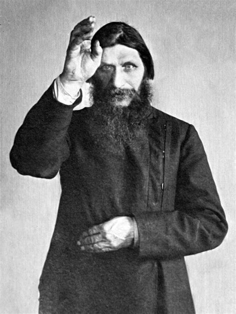

King Kieran

My name is Kieran and I am the King. I like foraging, especially mushrooms! My son Peter is the hier to the throne.

Prince Peter

My name is Peter and I am the Prince. I am very conscious about my social-media presence. Follow me on instagram @princepeterposes
Princess Penelope

My name is Penelope and I am the Princess. I like a lot of things...
- Pencils
- Pine nuts
- Poplar trees
- Prunes
Susan

I am the King's Mistress and mother to the illigitimate Princess Penelope. The Queen just can't give him what he wants.
Rasputin
Greetings. I am Rasputin. I am the spiritual guide to the royal family, and I don't have any dodgy motives, honest. I wrote the Wikepedia page on Mysticism from beyond the grave...